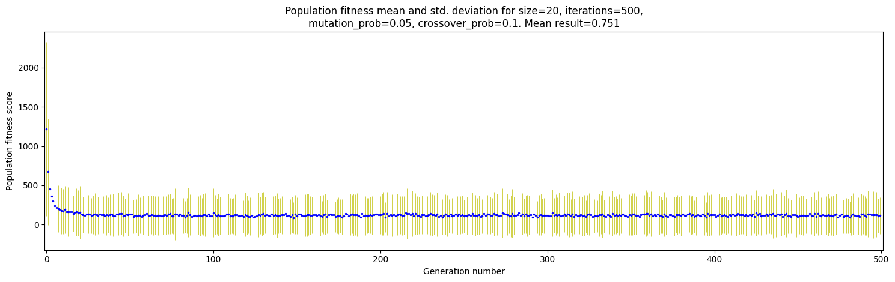
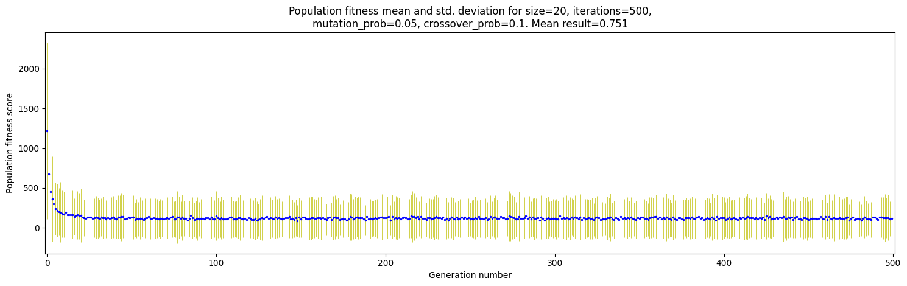

Jakub Ostrzołek
WSI ćwiczenie 2 - algorytm genetyczny
Opis ćwiczenia
Celem ćwiczenia było zaimplementowanie algorytmu genetycznego Hollanda oraz użycie go w problemie poszukiwania minimum dla funkcji czterech zmiennych.
Funkcja implementująca algorytm przyjmuje następujące główne argumenty:
fitness_fnc- funkcja oceny (musi przyjmować jako argument jednego osobnika - wektor wartości boolowskich)population- populacja początkowych osobnikówiterations- liczba iteracji, po której algorytm ma zakończyć działaniemutation_prob- szansa, że dany gen w osobniku ulegnie mutacjicrossover_prob- szansa, że para osobników ulegnie krzyżowaniu
Funkcja zwraca krotkę (ocena, osobnik), która reprezentuje najlepsze rozwiązanie, lub, po ustawieniu argumentu return_generations=True, listę obiektów klasy Generation, reprezentujących stan populacji w kolejnych iteracjach przebiegu algorytmu.
Wykorzystane zewnętrzne biblioteki
numpymatplotlibpytestpytest-benchmark
Użycie
Aby użyć algorytmu dla wybranych parametrów algorytmu należy uruchomić skrypt main.py i postępować zgodnie z instrukcjami (main.py --help).
Testowanie
Przetestowana została jedynie część algorytmiczna ćwiczenia. Aby uruchomić testy należy wpisać komendę pytest --benchmark-skip lub pytest test_genetic.py (aby nie wykonywać czasochłonnej oceny).
Ocena parametrów algorytmu
Aby szybko dokonać oceny i wygenerować wykresy użyte w tej dokumentacji należy uruchomić skrypt bashowy plots.sh
Ocenę należy uruchomić komendą pytest --benchmark-json=<ścieżka_do_pliku_z_oceną>.json. Można zmieniać oceniane zbiory parametrów zmieniając wartości stałych SIZES_ITERATIONS (skumulowane sizes i iterations, ponieważ aby przebiegi algorytmu miały równą ilość wszystkich wygenerowanych osobników), MUTATION_PROBS, CROSSOVER_PROBS. Aby ograniczyć liczbę wykonywanych testów, zamiast oceniania każdej kombinacji parametrów algorytmu, są testowane kolejno parametry o wartościach pochodzących z wyżej wymienionych stałych, a reszta parametrów pochodzi ze stałej STD_PARAMS. Dodatkowo jest jeszcze stała SEPARATE_PARAMS, służąca do dodania osobnych zestawów parametrów.
Można również regulować ilość powtórzeń stałą REPEAT.
Analiza
Aby poddać wyniki analizie, należy wykonać skrypt analyze.py i postępować zgodnie z instrukcjami (analyze.py --help). Za pomocą skryptu można wygenerować:
- wykresy zależności oceny rozwiązań populacji od numeru iteracji algorytmu (
plot_type=scatter); większe punkty na wykresie oznaczają więcej osobników o dokładnie tej samej ocenie (ten typ wykresu staje się mało czytelny dla dużej liczby iteracji, powtórzeń i rozmiaru populacji), - wykresy zależności średniej oceny rozwiązań populacji wraz z odchyleniem standardowym reprezentowanym poprzez słupek błędu od numeru iteracji algorytmu (
plot_type=mean-std) (ten typ wykresu staje się mało czytelny dla dużej liczby iteracji), - wykresy porównujące wydajność algorytmu w zależności od zmieniającego się jednego parametru algorytmu przy stałej reszcie (
plot_type=compare).
Typ wykresu scatter oraz mean-std biorą pod uwagę skumulowane populacje z wszystkich powtórzeń.
Oto przykładowe wyniki:
- Ocena kolejnych populacji (wydaje się, że ocena przyjmuje tu ujemne wartości, jednak jest to spowodowane tym, że rozmiar punktu rośnie wraz z ilością identycznych punktów):
- Średnia ocena i odchylenie standardowe kolejnych populacji:
- Porównanie wydajności algorytmu dla różnych wartości rozmiaru populacji i ilości iteracji (tak, żeby ):
- Porównanie wydajności algorytmu dla różnych wartości szansy na mutację:

- Porównanie wydajności algorytmu dla różnych wartości szansy na krzyżowanie:

Wnioski
Z wykresów porównujących można wywnioskować, że:
- dysponując "budżetem" łącznej liczby wygenerowanych przez algorytm osobników (), warto dobrze pomyśleć nad rozdysponowaniem tego budżetu na parametry rozmiaru populacji i liczby iteracji. Przesada w obie strony skutkuje obniżeniem osiągów algorytmu. Optymalna wartość w tym przypadku leży gdzieś w okolicy
- zarówno za duża jak i za mała szansa na mutację wpływa negatywnie na rozwiązanie. Najlepsza wartość wydaje się być w pobliżu .
- szansa na krzyżowanie nie wpływa znacząco na wynik algorytmu. Dodatkowo za każdym razem, gdy generuję ten wykres, wygląda on inaczej. Przyjąłem wartość tego parametru dla rozwiązania równą .
Wobec tego najlepsze parametry dla algorytmu mieszczą się w okolicach:
size=15iterations=667mutation_prob=0.1crossover_prob=0.05
Wykresy typu scatter i mean-std dla tak dobranych parametrów:


Dla porównania zbiór parametrów wybranych przeze mnie "na wyczucie" (użyty jako STD_PARAMS w test_benchmark.py):
 

Udało się (co prawda bardzo niewiele) obniżyć średnią ocenę wyniku dla paremtrów dobranych eksperymentalnie.
Na wykresach typu scater można zauważyć, że w I przypadku osobniki bardziej równomiernie pokrywają wykres - może to oznaczać, że bardziej "odrywają" się od swoich grup w poszukiwaniu lepszych minimów. Przypuszczenie to potwierdza również wyższa wartość odchylenia standardowego, widoczna na wykresie typu mean-std.
W II przypadku osobniki zapewnie czasami znajdują sub-optymalne minimum i mają zbyt słabą eksplorację, by się z niego wydostać.